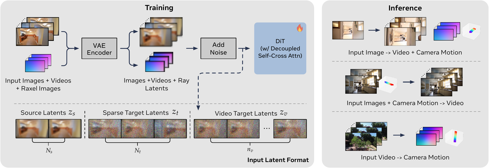

Recovering camera parameters from images and rendering scenes from novel viewpoints have long been treated as separate tasks in computer vision and graphics. This separation breaks down when image coverage is sparse or poses are ambiguous, since each task needs what the other produces. We propose Rays as Pixels, a Video Diffusion Model (VDM) that learns a joint distribution over videos and camera trajectories. We represent each camera as dense ray pixels (raxels) and denoise them jointly with video frames through a Decoupled Self-Cross Attention mechanism. A single trained model handles three tasks: predicting camera trajectories from video, jointly generating video and camera trajectory from input images, and generating video from input images along a target camera trajectory. Because the model can both predict trajectories from a video and generate views conditioned on its own predictions, we evaluate it through a closed-loop self-consistency test, demonstrating that its forward and inverse predictions agree. Notably, trajectory prediction requires far fewer denoising steps than video generation, and even a few denoising steps suffice for self-consistency. We report results on pose estimation and camera-controlled video generation.
At training time, input images, videos, and their ray (raxel) images are encoded by a frozen VAE and concatenated along the token axis as source latents, sparse target latents, and video target latents. We add noise and denoise the joint sequence with a DiT backbone that uses a decoupled self-cross attention block. At inference time, the same model supports three modes depending on which latents are given vs. noised: (i) input image → video + camera motion, (ii) input images + camera motion → video, and (iii) input video → camera motion. For more detail, please reference the paper.

Given an input video, our model estimates the dense camera trajectory by denoising the ray latents conditioned on the fixed video latents. We then recover camera parameters from the predicted raxels via closed-form orthogonal Procrustes. Below, each clip visualises the input video alongside the reconstructed camera trajectory.
Layout of each clip — Left: the input video. Middle: the predicted raxel (top) and the ground-truth raxel (bottom). Right: our camera visualisation compared against ground truth (COLMAP). Since COLMAP does not recover metric scale, we align its scale to our predicted camera locations.
Starting from a single input image, our model jointly samples a plausible camera trajectory and the corresponding video. This enables generation of scenes with large viewpoint changes where, unlike image-to-video baselines that hallucinate camera motion implicitly, the motion is explicitly represented and editable. We compare against one of the best approaches, Kaleido, on DL3DV-140 test scenes.
Given an input image and a user-specified camera trajectory, we re-render the scene as a video. We showcase four pre-defined trajectories: arc-left, arc-right, zoom-in, and zoom-out, to demonstrate controllable viewpoint synthesis from a single image.
We qualitatively compare our full model against three variants: without decoupled attention (No Decoupled), without cosine-similarity loss (No Cosine), and a Plücker-embedding baseline (Plücker) in which rays are concatenated channel-wise with video latents rather than represented as pixel-aligned raxels. Quantitative metrics (FID / FVD / Rerr / Terr) are reported in the paper.
@article{jang2026raysaspixels,
title = {Rays as Pixels: Learning a Joint Distribution of Videos and Camera Trajectories},
author = {Jang, Wonbong and Liu, Shikun and Sanyal, Soubhik and Perez, Juan Camilo and Ng, Kam Woh and Agrawal, Sanskar and Perez-Rua, Juan-Manuel and Douratsos, Yiannis and Xiang, Tao},
journal = {arXiv preprint arXiv:2604.09429},
year = {2026},
eprint = {2604.09429},
archivePrefix = {arXiv},
primaryClass = {cs.CV},
url = {https://arxiv.org/abs/2604.09429}
}